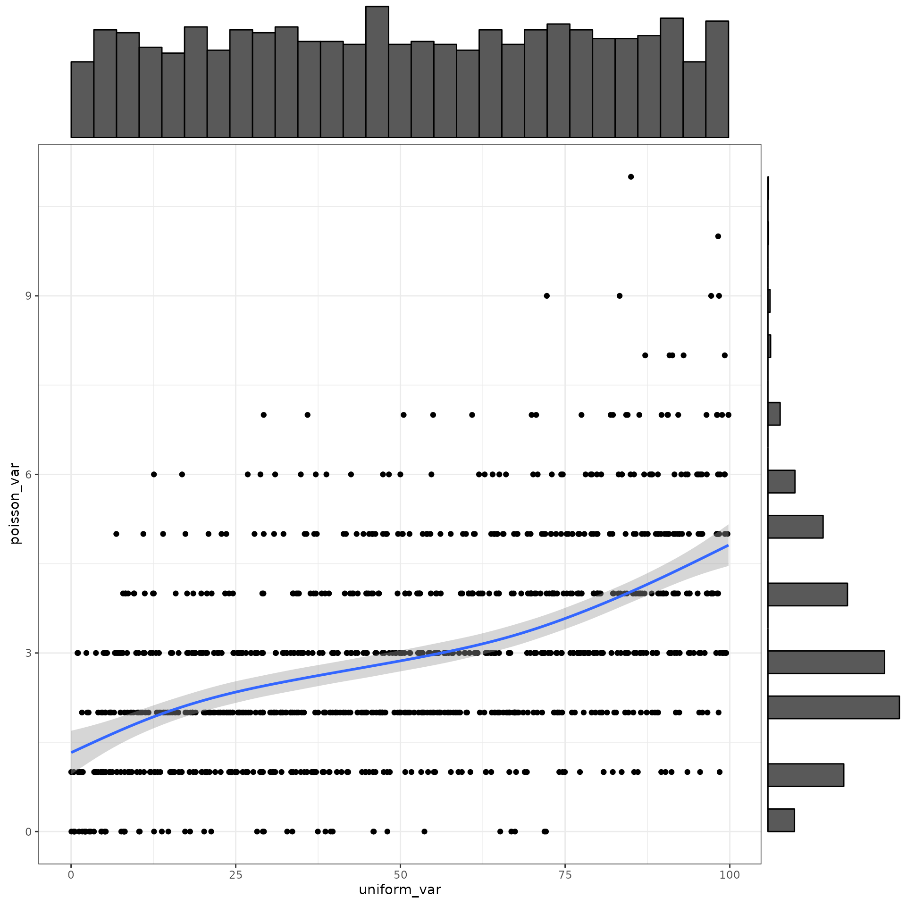
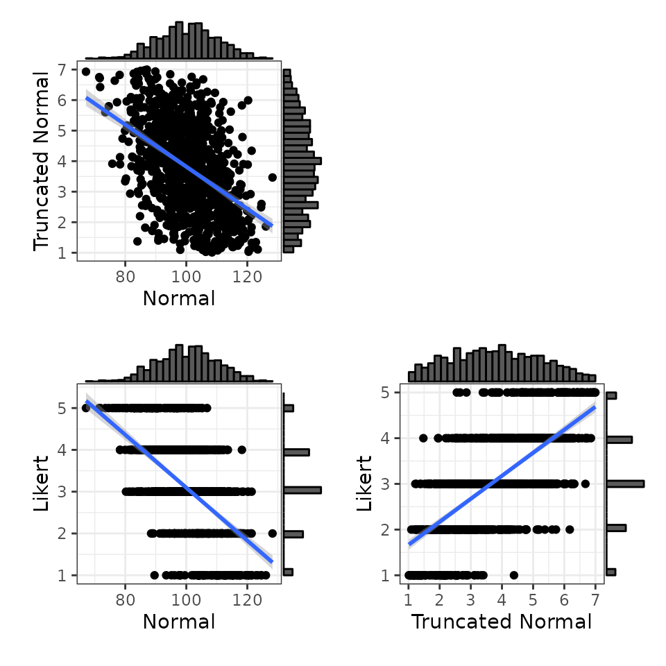
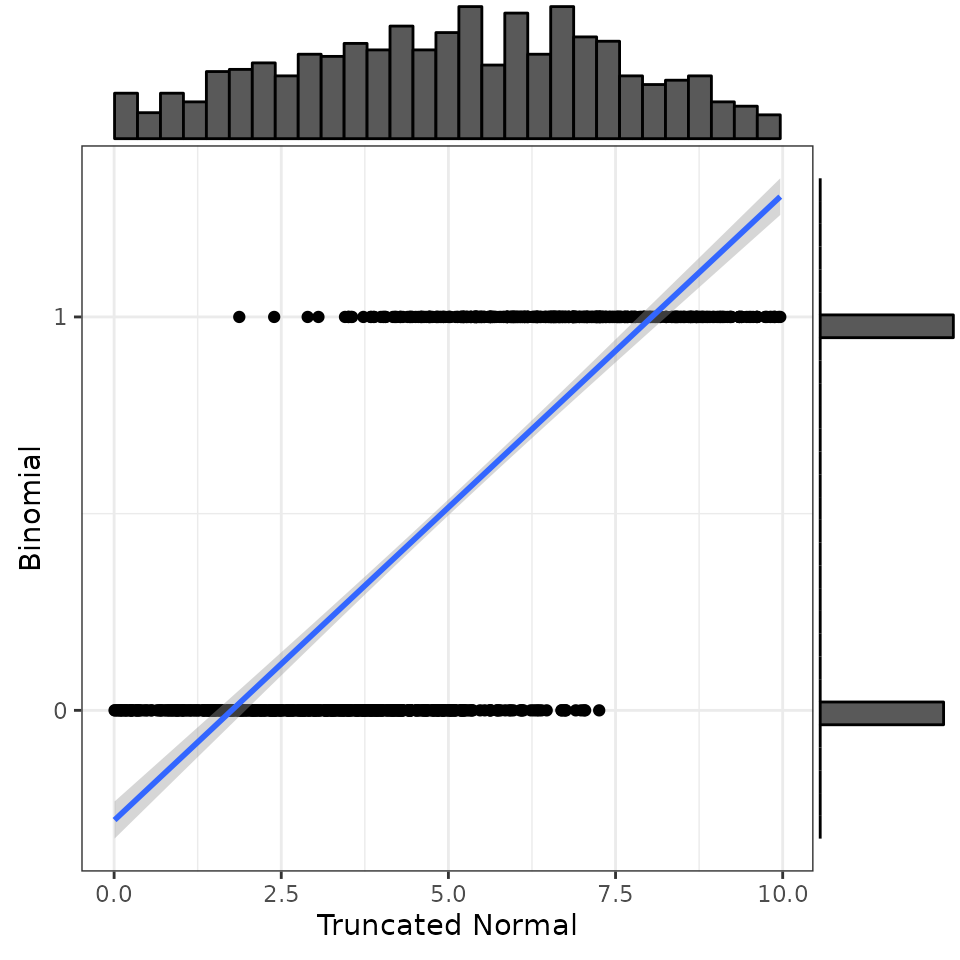

NORTA stands for Normal to Anything. This procedure simulates correlated data from a normal distribution and converts it to any other distribution using quantile functions. The challenge is determining what correlation between normally distributed variables is equivalent to a specified correlation between non-normally distributed variables.
rmulti
The current implementation of rmulti() is experimental.
It has six arguments:
-
nthe number of samples required -
distA named vector of the distributions of each variable -
paramsA list of lists of the arguments to pass to each distribution function -
rthe correlations among the variables (can be a single number, vars*vars matrix, vars*vars vector, or a vars*(vars-1)/2 vector) -
empiricallogical. If true, params specify the sample parameters, not the population parameters -
as.matrixlogical. If true, returns a matrix
By default, it returns a data frame with 100 rows of two normally distributed values with means of 0, standard deviations of 1, and a correlation of 0.
dat <- rmulti()
get_params(dat)
#> n var A B mean sd
#> 1 100 A 1.00 -0.06 0.05 0.99
#> 2 100 B -0.06 1.00 0.05 0.93The n, r, empirical and
as.matrix arguments work the same as the do for
rnorm_multi().
dat <- rmulti(n = 200, r = 0.5,
empirical = TRUE,
as.matrix = FALSE)
get_params(dat)
#> n var A B mean sd
#> 1 200 A 1.0 0.5 0 1
#> 2 200 B 0.5 1.0 0 1Distributions and parameters
You can set the distribution for each variable with the
dist argument. The options are any distribution function in
the {stats} package, such as “norm”, “pois”, “binom”, and “unif”, plus
the “truncnorm” distribution from the {truncnorm} package and the
“likert” distribution from {faux}.
Set the params argument to a named list with a vector of
named arguments for the random generation function for each
distribution. For example, use ?rpois to find out what
arguments the rpois() function needs to simulate values
from a poisson distribution. Don’t set n in
params; it will be set by the nin the
rmulti() function.
dat <- rmulti(n = 1000,
dist = c(uniform_var = "unif",
poisson_var = "pois"),
params = list(uniform_var = c(min = 0, max = 100),
poisson_var = c(lambda = 3)),
r = 0.5)
get_params(dat)
#> n var uniform_var poisson_var mean sd
#> 1 1000 uniform_var 1.00 0.49 50.62 28.67
#> 2 1000 poisson_var 0.49 1.00 2.98 1.75
You can also simulate more than two variables. Set the correlations using the upper right triangle or a correlation matrix (e.g., from a pilot dataset you’re trying to simulate).
dat <- rmulti(
n = 1000,
dist = c(N = "norm",
T = "truncnorm",
L = "likert"),
params = list(
N = list(mean = 100, sd = 10),
T = list(a = 1, b = 7, mean = 3.5, sd = 2.1),
L = list(prob = c(`much less` = .10,
`less` = .20,
`equal` = .35,
`more` = .25,
`much more` = .10))
),
r = c(-0.5, -0.6, 0.7)
)
# convert likert-scale variable to integer
dat$L <- as.integer(dat$L)
get_params(dat)
#> n var N T L mean sd
#> 1 1000 N 1.00 -0.47 -0.57 100.32 9.70
#> 2 1000 T -0.47 1.00 0.67 3.80 1.43
#> 3 1000 L -0.57 0.67 1.00 3.08 1.08
Impossible correlations
Not all correlations are possible for a given pair of distributions. At the extreme, it’s obvious that a normal distribution and a uniform distribution can’t be correlated 1.0, because they wouldn’t be different distributions then.
If you ask rmulti() for a correlation that is too high
or low, you will get a message telling you the maximum and minimum
correlations that can be generated.
dat <- rmulti(
dist = c(A = "binom", B = "pois", C = "norm"),
params = list(A = list(size = 1, prob = 0.5),
B = list(lambda = 3),
C = list(mean = 100, sd = 10)),
r = c(0.8, 0.9, 0.5)
)
#> Error in rmulti(dist = c(A = "binom", B = "pois", C = "norm"), params = list(A = list(size = 1, : Some of the correlations are not possible:
#> * A&B (-0.776 to 0.776)
#> * A&C (-0.798 to 0.798)Helper functions
I made a few helper functions for rmulti(). I’m not sure
if they’ll be useful to anyone else, but they’re available.
convert_r
This gives the r-value you’d need to simulate for a pair of normally-distributed variables to achieve the target r-value after converting to the target distributions.
adjusted_r <- convert_r(
target_r = 0.75,
dist1 = "truncnorm",
dist2 = "binom",
params1 = list(a = 0, b = 10, mean = 5, sd = 3),
params2 = list(size = 1, prob = 0.5)
)
adjusted_r
#> [1] 0.911What the rmulti() function does is use this adjusted r
to generate a multivariate normal distribution, then convert each
variable to the target distribution.
# simulate multivariate normal
dat <- rnorm_multi(n = 1000,
varnames = c("N1", "N2"),
r = adjusted_r,
empirical = TRUE)
# convert to target distributions
dat$T1 <- norm2trunc(dat$N1,
min = 0, max = 10,
mu = 5, sd = 3,
x_mu = 0, x_sd = 1)
dat$B2 = norm2binom(dat$N2,
size = 1, prob = 0.5,
mu = 0, sd = 1)
# check
get_params(dat)
#> n var N1 N2 T1 B2 mean sd
#> 1 1000 N1 1.00 0.91 0.99 0.73 0.00 1.00
#> 2 1000 N2 0.91 1.00 0.90 0.79 0.00 1.00
#> 3 1000 T1 0.99 0.90 1.00 0.76 5.02 2.38
#> 4 1000 B2 0.73 0.79 0.76 1.00 0.52 0.50Note that the correlation between T1 and B2 is unlikely to be exactly 0.75 unless the n is very large, especially for distributions that have very few unique values.
